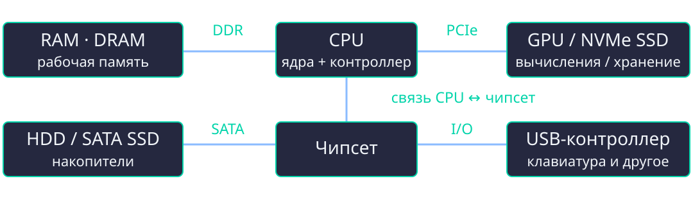
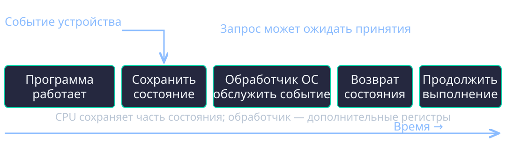
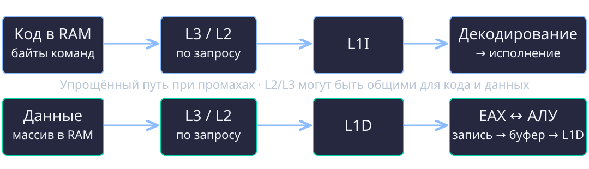

Адаптационный курс · Программная инженерия · 1 курс
Как устроен компьютер
И где исполняется программа
Лекция №4 · 90 минут + дополнительные разборы
CPU, память, устройства · C и NASM · НИУ ВШЭ
Два потока: инструкции и данные
a[1] += 5;
Что сделать?
Машинные инструкции.
Они тоже хранятся в памяти.
С чем сделать?
Элемент массива.
Его нужно прочитать и изменить.
Проследим оба пути: от хранения — до исполнения.
Компьютер — взаимодействующие части

Вычисления · рабочая память · хранение · ввод-вывод.
Пример топологии ПК; часть устройств может подключаться иначе.
CPU исполняет · RAM хранит рабочее
CPU
Инструкции, вычисления,
переходы, обращения к памяти.
Несколько ядер — несколько
ресурсов исполнения.
RAM
Команды и данные
работающих программ.
Обычная DRAM теряет данные
без питания.
Больше RAM ≠ быстрее каждое сложение.
HDD: данные ждут головку
- Головка перемещается к нужной дорожке.
- Пластина поворачивается к нужному сектору.
- Контроллер передаёт данные.
7200 об/мин → 8.33 мс на оборот
Среднее вращательное ожидание: ≈ 4.17 мс.
Без поиска дорожки, передачи и очереди. Случайное чтение дорого.
SSD: Flash + контроллер
Нет механики
Случайные обращения
намного быстрее HDD.
Энергонезависимое хранение.
Есть правила записи
Программирование страниц.
Стирание крупных блоков.
Контроллер: отображение адресов,
ошибки и распределение износа.
SSD не становится RAM: другой доступ и другие задержки.
CPU и GPU: разные приоритеты
| CPU | GPU |
|---|
| Быстрый ход отдельного потока | Много подходящих операций параллельно |
| Сложное управление и ветвления | Высокая суммарная производительность |
| Общий код программы | Пиксели, матрицы, массовые вычисления |
Передача данных и запуск GPU тоже занимают время.
GPU, видеопамять и дисплей
Дискретный GPU
Обычно собственная VRAM.
Передачи RAM ↔ VRAM
имеют стоимость.
Встроенный GPU
Обычно использует
общую системную RAM.
CPU + драйвер → GPU → буфер изображения → дисплей.
Больше VRAM — больше места, не обязательно больше вычислительной скорости.
Остальные части тоже нужны
- Плата и чипсет: соединения, контроллеры, разъёмы.
- Периферия: сеть, клавиатура, мышь, дисплей.
- Прошивка UEFI во Flash: инициализация и загрузка.
- Питание и охлаждение: условия устойчивой работы.
Контроллер — оборудование. Драйвер — программный код ОС.
Внутри ядра CPU
Рабочее состояние
Регистры: операнды и адреса.
RIP: адрес инструкции.
RFLAGS: флаги.
Исполнение
Выборка и декодирование.
АЛУ и другие устройства.
Загрузки, записи и кэши.
Регистр CPU — не ячейка RAM с адресом переменной C.
Учебный цикл инструкции
- Выбрать байты команды.
- Декодировать: что сделать и с какими операндами?
- Получить операнды и выполнить действие.
- Сохранить результат и продолжить исполнение.
Реальный CPU перекрывает этапы нескольких инструкций.
GHz — не число инструкций в секунду
3 GHz → ≈ 0.333 нс на такт
- Инструкция может занимать несколько тактов.
- Несколько инструкций могут выполняться с перекрытием.
- Ожидание памяти может ограничивать скорость.
Производительность зависит от задачи и всей системы.
Где хранятся команды и данные?
| Модель | Память и пути доступа |
|---|
| Фон Нейман | Общая память команд и данных |
| Гарвард | Раздельные памяти и пути доступа |
| Модифицированная гарвардская | Разделение на части уровней |
Типичный x86-64: общее пространство, но разные L1I и L1D.
Общая память ≠ «всё исполняется»
Простая машина
Без защиты CPU может пытаться
читать байты памяти как команды.
Современная ОС
Права страниц ограничивают
чтение, запись и исполнение.
NX/XD запрещает исполнение.
Стек и куча обычного процесса обычно неисполняемы.
Шина: соединение + правила обмена
| Назначение | Вопрос |
|---|
| Адрес | К какому месту или ресурсу обращаемся? |
| Данные | Что передаём? |
| Управление | Чтение? Запись? Готово? Ошибка? |
В пакетном соединении это могут быть поля, передаваемые по одним линиям.
Чтение и запись — разные запросы
Чтение
Инициатор → адрес + запрос.
Адресат → данные + статус.
Запись
Инициатор → адрес + данные.
Протокол определяет завершение.
Контроллер памяти переводит запрос в команды DRAM.
Запрос отправлен ≠ результат уже получен.
В компьютере несколько соединений
DDR — память · PCIe — устройства · USB — периферия.
M.2, SATA и NVMe — не синонимы
- M.2: форм-фактор и разъём.
- SATA: интерфейс подключения накопителей.
- NVMe: протокол, в локальном ПК обычно через PCIe.
M.2 SSD может быть SATA или PCIe/NVMe.
Совместимость зависит от накопителя и слота.
Задержка и пропускная способность
Задержка L: ожидание ответа.
Скорость B: объём за секунду при передаче.
T ≈ L + V / B
100 мкс + 1 MB / 1 GB/s ≈ 1.1 мс.
Грубая модель без перекрытия и очередей; MB и GB десятичные.
Иерархия памяти
| Уровень | Кто и как использует |
|---|
| Регистры | Операнды указаны в инструкциях |
| L1 / L2 / L3 | CPU автоматически кэширует линии |
| RAM / VRAM | Рабочие данные CPU / GPU |
| SSD / HDD | Ввод-вывод, файлы и блоки |
Обычно: ближе к ядру → меньше объём и ниже задержка.
SRAM, DRAM и Flash
| Технология | Свойство | Обычно используется |
|---|
| SRAM | Без refresh, нужно питание | Кэши CPU |
| DRAM | Нужны refresh и питание | Основная RAM |
| Flash | Сохраняет без питания | SSD, прошивка |
«Статическая» SRAM не означает «энергонезависимая».
Порядки задержек
| Где данные | Грубый ориентир |
|---|
| Регистры / L1 | Единицы тактов для типичных операций |
| L2 / L3 | Десятки тактов и более |
| DRAM | Десятки–сотни наносекунд |
| SSD / HDD | Десятки–сотни мкс / миллисекунды |
Не константы. 100 нс при 3 GHz ≈ 300 тактов ожидания.
Попадание и промах кэша
Hit
Нужная линия есть
на проверяемом уровне.
Miss
Нужно искать дальше:
L2, L3, возможно RAM.
Промах L1 ≠ обязательно чтение DRAM.
L1I и L1D: код тоже кэшируется
L1I · инструкции
Байты команд →
выборка и декодирование.
L1D · данные
Байты операндов ↔
загрузки и записи.
Ниже часто находятся L2 и L3 для обоих потоков.
Распространённая схема; уровни и их совместное использование зависят от CPU.
Кэш-линия: получаем соседние байты
Условие примера: линия 64 байта, int — 4 байта.
0x1000 a[0] a[1] ... a[15] 0x103F
└──── одна линия 64 B ────┘
0x1040 a[16] ... 0x107F
При таком выравнивании в линии — 16 элементов.
64 B типично для современных x86-64. При смещении границы меняются.
Локальность делает кэш полезным
Временная
Недавно использованное
нужно снова.
Пространственная
После одного элемента
нужны соседние.
| 16 чтений · выровненный int-массив | Линий затронуто |
|---|
| Индексы 0, 1, …, 15 | 1 |
| Индексы 0, 16, …, 240 | 16 |
Запись может задержаться в кэше
CPU → буфер записей → линия L1D
Write-back: изменённая линия передаётся дальше позднее.
Dirty: копия отличается от следующего уровня.
Изменить переменную ≠ немедленно обновить DRAM
≠ сохранить файл на накопителе.
Программа не управляет диском напрямую
Программа → ОС → драйвер → контроллер
- Команда: что выполнить?
- Параметры: откуда, куда, сколько?
- Состояние: готово или произошла ошибка?
Регистры устройства ≠ регистры CPU. MMIO ≠ обычная RAM.
Как узнать, что устройство готово?
Опрос · polling
CPU повторяет проверку.
Просто, но проверки
занимают процессор.
Прерывание · interrupt
Система получает уведомление.
Обработка тоже
имеет стоимость.
Реальные системы сочетают опрос, уведомления и обработку групп событий.
DMA: данные идут без побайтового CPU
- ОС и драйвер настраивают запрос и буфер.
- Устройство / контроллер → RAM: передача блока.
- Уведомление о завершении, например прерывание.
- ОС делает результат доступным программе.
CPU организует работу, но не копирует каждый байт инструкцией.
Что происходит при прерывании

Прерывание не обязано переключать процесс.
Три причины передачи управления
| Событие | Пример |
|---|
| Внешнее прерывание | Таймер, завершение I/O |
| Исключение инструкции | Страничное исключение, integer divide by zero |
| Системный вызов | Программа намеренно просит ОС о чтении |
Исключение не всегда ошибка: ОС может штатно подгрузить страницу.
Таймер, клавиатура, сеть
- Таймер: ОС получает управление и учитывает время.
- USB-клавиатура: обмен через хост-контроллер.
- Сеть: пакет пришёл, данные и статус готовы.
Клавиша не вызывает функцию программы напрямую.
Адрес — где, значение — что
| Условный адрес | Байт |
|---|
0x1004 | 14 |
0x1005 | 00 |
0x1006 | 00 |
0x1007 | 00 |
Вместе: 20 как 32-битное little-endian целое.
Размер типа — условие платформы
| Linux x86-64 · LP64 | Байтов |
|---|
char | 1 |
int | 4 |
long, указатель | 8 |
sizeof измеряет размер в байтах C.
NASM: word = 16 бит, dword = 32, qword = 64.
Переменная и указатель
int x = 20;
int *p = &x;
*p = 25;
x — объект · &x — адрес · p хранит указатель.
*p = 25 изменяет значение x, а не адрес x.
Массив: элементы идут подряд
int a[3] = {10, 20, 30};
| Элемент | Условный адрес | Значение |
|---|
| a[0] | 0x1000 | 10 |
| a[1] | 0x1004 | 20 |
| a[2] | 0x1008 | 30 |
Байтовый адрес = база + индекс × размер элемента.
Порядок байт: 0x12345678
| По возрастающим адресам → | Байты |
|---|
| Little-endian · x86-64 | 78 56 34 12 |
| Big-endian | 12 34 56 78 |
Меняется порядок байтов, не запись битов внутри байта.
Представление объекта в C можно читать через unsigned char *.
Шаг 0: программа с накопителя в память
- На SSD/HDD — исполняемый файл.
- ОС создаёт отображения кода и данных процесса.
- Нужные страницы становятся доступны в RAM.
- CPU получает инструкции и данные через кэши.
Весь файл не обязан сразу копироваться в RAM.
Условия нашей трассировки
int a[3] = {10, 20, 30};
a[1] += 5;
- Linux x86-64 · int = 4 байта · little-endian.
- Условные адреса: код
0x400000, массив 0x1000. - RBX содержит адрес массива; страницы доступны.
Одно ядро, без конкурирующих изменений; адреса виртуальные.
Три инструкции NASM
mov eax, [rbx + 4] ; память → регистр
add eax, 5 ; регистр → АЛУ → регистр
mov [rbx + 4], eax ; регистр → память
RBX — регистр с адресом.
[RBX + 4] — обращение по вычисленному адресу.
Учебная реализация: компилятор может выбрать другой код.
Команды — тоже байты
| Условный адрес | Машинные байты | Команда |
|---|
0x400000 | 8B 43 04 | Загрузить |
0x400003 | 83 C0 05 | Прибавить 5 |
0x400006 | 89 43 04 | Записать |
9 байтов помещаются в одну линию при таком выравнивании.
Здесь по 3 байта на команду. В общем случае длина x86 переменная.
Шаг 1: получить инструкцию

RIP → байты кода → декодирование. Попадание сокращает путь.
Шаг 2: загрузить a[1]
mov eax, [rbx + 4]
0x1000 + 4 = 0x1004 → проверка адреса и доступ.
Линия данных: RAM / нижние кэши → L1D → EAX.
Полученные байты
14 00 00 00 → 20
Состояние
EAX = 20
a = {10, 20, 30}
Шаг 3: вычислить 20 + 5
add eax, 5
EAX: 20 → АЛУ → 25
Откуда операнды?
20 уже в регистре.
5 находится в байтах инструкции.
После операции
EAX = 25
a = {10, 20, 30}
Шаг 4: записать результат
mov [rbx + 4], eax
25 → буфер записей → линия данных.
0x1004…0x1007: 19 00 00 00
Для программы
a = {10, 25, 30}
Для оборудования
Write-back может отложить
обновление DRAM.
Соберём состояния вместе
| Момент | EAX | Логический массив |
|---|
| До фрагмента | Неважно | 10, 20, 30 |
| После загрузки | 20 | 10, 20, 30 |
| После сложения | 25 | 10, 20, 30 |
| После записи | 25 | 10, 25, 30 |
Демонстрация C/NASM в Docker: make lecture4-check.
Стек помогает организовать вызовы
- Адреса возврата, сохранённые регистры.
- Часть локальных объектов и временных данных.
RSP — указатель стека в x86-64.call сохраняет адрес возврата; ret возвращается.
Не каждая локальная переменная обязана находиться на стеке.
Куча: время жизни задаём явно
int *p = malloc(3 * sizeof *p);
if (p != NULL) {
p[0] = 10; p[1] = 20; p[2] = 30;
p[1] += 5;
free(p);
p = NULL;
}
Нужен <stdlib.h>. После free обращаться к блоку нельзя.
Указатель и объект живут отдельно
| Объект | Типичное время жизни |
|---|
| Автоматический локальный | До выхода из соответствующего блока |
| Динамический блок | До освобождения |
| Глобальный / static | Всё время выполнения программы |
Место хранения p не определяет место хранения *p.
Прочитать → обработать → сохранить
- ОС получает данные файла; при необходимости — I/O и DMA.
- CPU получает код через L1I, данные — через L1D.
- Вычисления изменяют регистры и рабочие данные.
- Для сохранения программа отдельно запрашивает запись файла.
Файловый кэш ОС в RAM и кэш CPU — разные механизмы.
Если подключить GPU
Подготовить → передать → вычислить → получить
Выгодно
Много подходящей
параллельной работы.
Данные переиспользуются на GPU.
Может быть невыгодно
Маленькая задача,
частые передачи,
длинные зависимости.
Что ограничивает именно эту задачу?
| Нагрузка | Возможное узкое место |
|---|
| Случайные чтения HDD | Поиск и вращение |
| Большая последовательная передача | Пропускная способность |
| Зависимые обращения к RAM | Задержка памяти |
| Вычисления над готовыми операндами | Ресурсы исполнения CPU/GPU |
Проверьте модель компьютера
- Команда и её операнд: L1I / L1D.
- Промах L1: может помочь L2 или L3.
- Запись a[1]: не сохранение файла.
- DMA: передачу делает устройство / контроллер.
- Общая память: права исполнения всё равно действуют.
Теперь части связаны в систему
CPU исполняет · память хранит · соединения передают.
Контроллеры обслуживают устройства · ОС организует работу.
Далее: как ОС запускает программу и управляет процессом.
Источники: CS:APP; Patterson–Hennessy; Intel SDM;
NASM Documentation; C N1570; System V AMD64 psABI.
Линия, индекс, тег
Учебный кэш: линия 64 B, 64 набора, прямое отображение.
адрес: [ тег ][индекс: 6][смещение: 6]
0x1234: 1 8 52
Смещение выбирает байт, индекс — набор,
тег отличает претендующие на него блоки.
Ассоциативность и вытеснение
- Один набор может содержать несколько линий.
- Несколько «мест» уменьшают часть конфликтных промахов.
- При заполнении нужно выбрать, что вытеснить.
Первое обращение · нехватка объёма · конфликт за набор.
Политики записи — разные вопросы
| Политика | Что означает |
|---|
| Write-through | Передавать запись также на следующий уровень |
| Write-back | Отложить передачу изменённой линии |
| Write-allocate | Получать линию при промахе записи |
MMIO и специальные инструкции могут иметь другие правила.
Копии одной линии в разных ядрах
Протокол согласованности организует владение
линией и распространение изменений.
False sharing: разные переменные в одной линии
вызывают лишние передачи между ядрами.
Согласованность кэшей не заменяет синхронизацию в C.
Страницы и TLB
При странице 4 KiB: 12 бит смещения.
0x1234 → страница 1, смещение 0x234 = 564
TLB: кэш переводов адресов и прав, не байтов массива.
Промах TLB и страничное исключение — разные события.
Структура: между полями бывают байты
struct S { char c; int x; };
смещение: 0 1 2 3 4 5 6 7
c padding int x
Linux x86-64: offsetof(struct S, x) = 4, размер 8.
Результат зависит от ABI и настроек упаковки.
Одна строка C ≠ фиксированный NASM
- Известный результат можно вычислить заранее.
- Неиспользуемый массив может исчезнуть.
- Значение может остаться в регистре.
- Компилятор может выбрать другую инструкцию.
Наша NASM-функция фиксирует именно изучаемый фрагмент.
Как запрос достигает нужного ядра
- На x86 используется инфраструктура APIC.
- PCIe-устройства могут отправлять MSI/MSI-X сообщения.
- ОС настраивает маршрутизацию и обработчики.
- Очереди и пакетная обработка снижают накладные расходы.
Передача данных и уведомление о готовности остаются разными действиями.